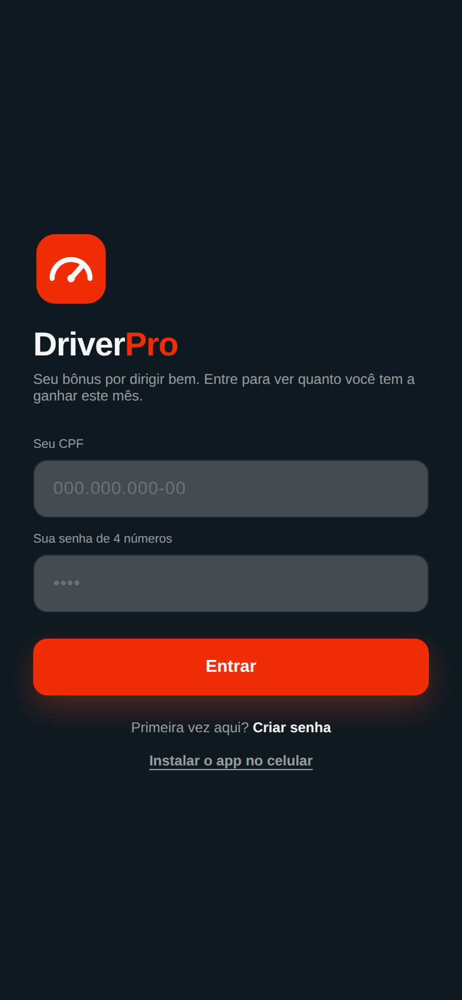
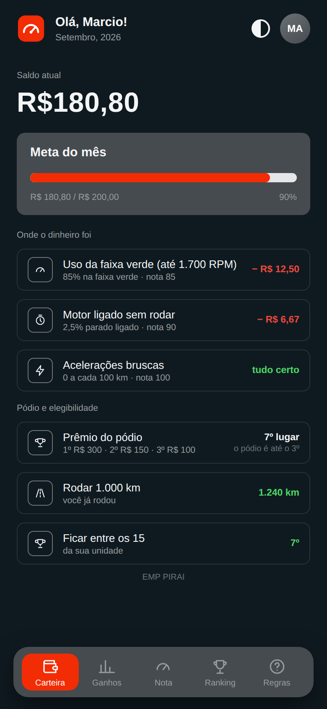
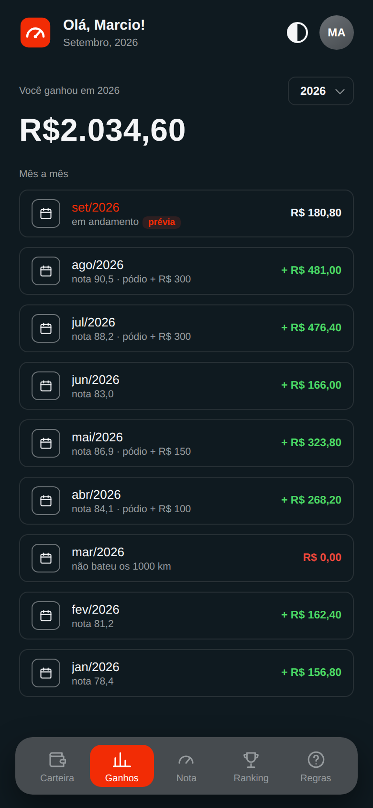
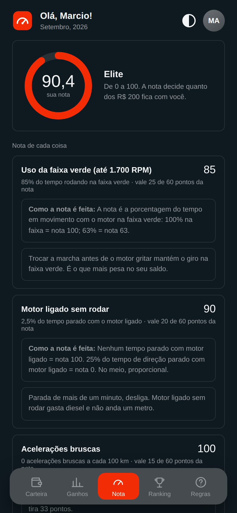
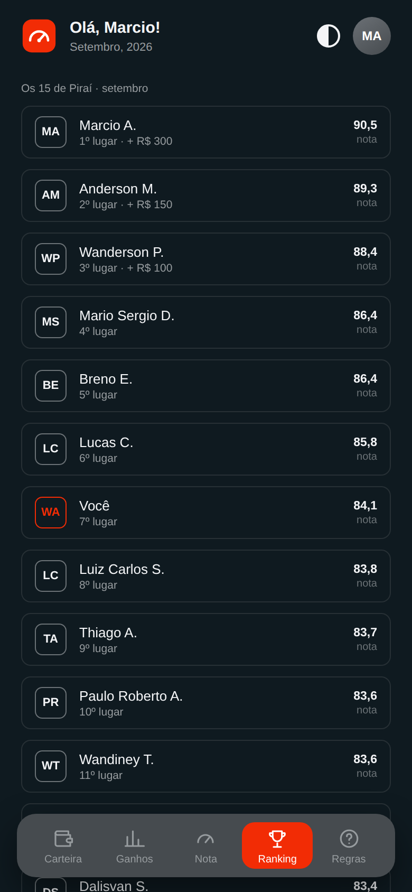
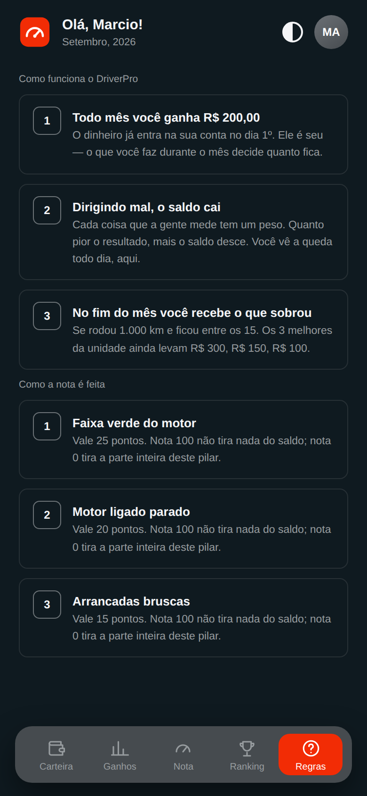

Proposta de piloto em Piraí (EMP e Insumo Lata) — outubro, novembro e dezembro de 2026 — com o app pronto, os dados já coletados e o custo simulado sobre números reais de agosto.
Todo motorista começa o mês com R$ 200 na carteira. Dirigir mal desconta. Quem cumpre a regra recebe o que sobrou.
Os 15 melhores da EMP e os 7 da Insumo Lata, entre os que rodaram 1.000 km. Em agosto, 103 motoristas de Piraí foram medidos pela telemetria.
Esperado, repetindo agosto nas duas unidades. Teto absoluto de R$ 21.300: nunca passa disso, aconteça o que acontecer.
É a economia de diesel que paga o programa em Piraí. Cada 1% economizado vale cerca de R$ 5.100 por mês nas duas unidades.
Telemetria já contratada, app e robô já construídos dentro do portal Gestão em Movimento. O único custo novo é o prêmio.
Três apurações completas (out, nov, dez), balanço em janeiro e decisão de expansão para a Conlog inteira.
Três hábitos do motorista mexem no consumo todos os dias. A telemetria já mede os três. O que falta é dar ao motorista um motivo para mudar, e mostrar o resultado para ele de um jeito simples.
Esticar a marcha e rodar acima de 1.700 rpm queima combustível sem ganhar velocidade. É o hábito que mais custa dinheiro e o que mais varia entre motoristas.
Em Piraí, a nota de marcha lenta vai de 16 a 92 entre os motoristas. Mesmo caminhão, mesma operação, comportamentos completamente diferentes.
Sair forte do sinal gasta mais, desgasta o veículo e é o primeiro sinal de condução agressiva. Hoje quase todo mundo já acerta, e isso precisa continuar.
O que existe hoje: a telemetria Geotab está instalada na frota e registra tudo isso, motorista a motorista, todos os dias. O dado existe. Ninguém é reconhecido por acertar nem enxerga o que está errando.
Por que "perder" em vez de "ganhar": o dinheiro que já é seu dói mais ao sair do que um bônus abstrato que talvez venha. O app não diz "sua nota é 85"; diz "giro fora da faixa: menos R$ 12,50". O motorista entende a régua em 30 segundos e sabe exatamente o que corrigir amanhã.
A média é a consequência; o hábito é a causa. O DriverPro paga pela causa, e o km/L vem atrás. Por isso o km/L continua sendo medido no piloto: é o resultado que prova que o hábito mudou, não a régua do prêmio.
| Regra | Valor | Como funciona |
|---|---|---|
| Carteira do mês | R$ 200 | Saldo inicial igual para todos. Saldo final = R$ 200 × nota ÷ 100. |
| Uso da faixa verde | 25 pontos | % do tempo em movimento com o motor entre 1.100 e 1.700 rpm. |
| Motor ligado sem rodar | 20 pontos | Tempo com motor ligado e veículo parado, sobre o tempo de direção. |
| Acelerações bruscas | 15 pontos | Acelerações bruscas a cada 100 km, pela regra padrão do Geotab. |
| Elegibilidade | 1.000 km + top 15 | Rodou 1.000 km no mês, identificado no Geotab, e ficou entre os 15 melhores da unidade. |
| Pódio | R$ 300 / 150 / 100 | Extra para o 1º, 2º e 3º da unidade, somado à carteira. |
Cada pilar recebe uma nota de 0 a 100. A nota final pondera pelos pesos 25 / 20 / 15 (soma 60). Se um pilar não tiver medição no mês, o peso dele é redistribuído: ninguém é punido por falta de dado.
O robô coleta o Geotab toda manhã e recalcula o mês. A nota do mês é a média dos dias ponderada por km: um dia bom não compensa um mês ruim. No dia 1º a nota fecha e o pagamento é calculado.
Por unidade, o máximo é 15 × R$ 200 + R$ 550 de pódio = R$ 3.550 por mês. As regras ficam no banco de dados e podem ser ajustadas sem mexer no app, sempre para todos ao mesmo tempo.
| Pilar | Peso | Nota | Desconto |
|---|---|---|---|
| Uso da faixa verde | 25 | 85 | − R$ 12,50 |
| Motor ligado sem rodar | 20 | 90 | − R$ 6,67 |
| Acelerações bruscas | 15 | 100 | R$ 0,00 |
| Nota final | 60 | 90,4 | − R$ 19,17 |
Desconto de cada pilar = R$ 200 × (peso ÷ 60) × (1 − nota ÷ 100). Exemplo do giro: 200 × 25/60 × (1 − 0,85) = R$ 12,50. Nota 100 não tira nada; nota 0 tira a parcela inteira do pilar (R$ 83,33 no giro).
90,4% dos R$ 200
acima dos 1.000 exigidos
entre os 15: recebe
carteira + R$ 300 do pódio
Se o Marcio tivesse rodado 900 km, o app mostraria o mesmo saldo com o aviso "faltam 100 km para receber". Se ficasse em 16º, "precisa subir 1 posição". A régua é a mesma para todos e está visível o tempo todo.
Cada centavo do saldo tem um dado diário por trás. A regra é a mesma para todo mundo e está escrita dentro do app, na tela Regras.
Telemetria já contratada, robô rodando em nuvem gratuita, app dentro do portal Gestão em Movimento. Nenhuma licença nova.
A mesma régua já está preparada para a vFleets. Quando a Ambev quiser, o programa roda em qualquer transportadora.






EMP Piraí (171 cadastrados, 90 medidos, 15 elegíveis) + Insumo Lata Piraí (27, 13, 7), agosto de 2026. "Cadastrados" inclui inativos e afastados; "medidos" são os que rodaram identificados no Geotab. Entre os medidos, 21% recebem.
medidos pela telemetria em agosto
mediana; o maior rodou 9.782 km
o 16º fez 80,9
de 81,0 a 86,2: disputa apertada
Escala de 0 a 100. Em vermelho, os dois pilares com espaço real de melhoria. O giro varia de 60,6 a 79,4 entre motoristas; a marcha lenta, de 15,8 a 92,5.
| Agosto de 2026 | EMP Piraí | Insumo Lata |
|---|---|---|
| Carteiras (15 e 7 elegíveis) | R$ 2.481,87 | R$ 1.096,35 |
| retido por condução abaixo de 100 | − R$ 518 (17%) | − R$ 304 (22%) |
| Pódio (R$ 300 + 150 + 100) | R$ 550,00 | R$ 550,00 |
| Custo da unidade | R$ 3.031,87 | R$ 1.646,35 |
| Custo de Piraí no mês | R$ 4.678,22 | |
Na EMP, a carteira por elegível ficou entre R$ 162 e R$ 172; na Lata, entre R$ 128 e R$ 179. O 1º de cada unidade levaria R$ 472 e R$ 479 com o pódio. Onde o saldo foi, nas duas: faixa verde R$ 487 · motor ligado sem rodar R$ 308 · acelerações R$ 27.
repetindo agosto três vezes, nas duas unidades
3 × R$ 7.100: duas unidades com 15 elegíveis e nota 100
Só 15 por unidade recebem, e cada um recebe no máximo R$ 200. Quanto melhor a unidade dirige, mais perto do teto; mas o teto é fixo e conhecido antes de começar. Se todo mundo dirigir perfeitamente, custa R$ 3.550 por unidade e o diesel cai; se ninguém melhorar, custa menos e o problema continua sendo o mesmo de hoje.
| Período | Esperado | Teto |
|---|---|---|
| 1 mês | R$ 4.678 | R$ 7.100 |
| Piloto (out–dez/2026) | R$ 14.000 | R$ 21.300 |
| 1 ano | R$ 56.100 | R$ 85.200 |
Teto = 15 carteiras × R$ 200 + pódio R$ 550, por unidade. Esperado = agosto de 2026 repetido. Em agosto a Lata teve só 7 elegíveis (teto medido R$ 1.950); o teto de R$ 7.100 supõe 15 nas duas.
| Período | Esperado | Teto medido | Teto teórico |
|---|---|---|---|
| 1 mês | R$ 14.349 | R$ 19.700 | R$ 49.700 |
| 1 ano | R$ 172.200 | R$ 236.400 | R$ 596.400 |
Esperado = média de jun–ago/2026 com as mesmas regras em todas as unidades. Teto medido = o que agosto custaria se todos os elegíveis tirassem 100 (só 11 unidades tiveram elegíveis). Teto teórico = 14 unidades × R$ 3.550, todas com 15 motoristas acima de 1.000 km e nota 100: é o limite matemático, não uma previsão.
Leitura para o acionista: o programa na empresa inteira fica na casa de R$ 15 mil por mês hoje, e não passa de R$ 50 mil por mês em nenhuma hipótese. Unidades pequenas (Campo Grande, Balneário, com 1 elegível cada) puxam o teto teórico para cima sem disputa real. Na expansão, o top 15 fixo dá lugar a 15% do QLP (quadro de lotação) de cada unidade, calibrado quando todas estiverem medidas.
| Base de cálculo · Piraí (EMP + Lata) | Valor |
|---|---|
| Km no mês (EMP 90 × 1.717 km + Lata 13 × 1.236 km) | ~171 mil km |
| Consumo típico da empurrada | ~2 km/L |
| Diesel no mês | ~86 mil L |
| Gasto com diesel a R$ 6,00/L | ~R$ 515 mil |
| Cada 1% de economia | ~R$ 5.150 / mês |
Premissas a confirmar com o DRE da unidade: km, km/L e preço do litro são ordens de grandeza. O custo mensal do programa (R$ 4.678) é 0,9% desse diesel. A literatura de condução econômica aponta ganhos de 3% a 10%; os cenários ao lado usam 1% a 3%, de propósito conservadores.
| Cenário | Economia / mês | Custo / mês | Ganho líquido | ROI |
|---|---|---|---|---|
| Pessimista · 1% | R$ 5.150 | R$ 4.678 | R$ 472 | 10% |
| Base · 2% | R$ 10.300 | R$ 4.678 | R$ 5.622 | 120% |
| Otimista · 3% | R$ 15.450 | R$ 4.678 | R$ 10.772 | 230% |
| Empate | R$ 4.678 | R$ 4.678 | R$ 0 | 0,9% |
ROI = (economia − custo) ÷ custo. No cenário base, o piloto de 3 meses devolve cerca de R$ 17 mil líquidos. Na Conlog inteira a proporção é parecida: o custo fica em torno de 1% do diesel dos motoristas medidos, então o empate fica perto de 1% em qualquer unidade.
Menos desgaste de embreagem, freio e motor · menos ocorrências de condução agressiva · retenção de motorista bom · argumento de eficiência junto à Ambev.
Apresentação própria para os motoristas, em linguagem direta: os R$ 200, os três hábitos, o que precisa fazer para receber e como instalar o app. Todos saem da sala com o app instalado e a senha criada.
O motorista abre o app e vê o saldo. O gestor da unidade acompanha o ranking e conversa com quem está caindo. Ninguém precisa de planilha: o número é o mesmo para o motorista, o gestor e a diretoria.
Dia 1º: a nota fecha e o app mostra o resultado. Até o dia 5: lista de pagamento gerada pelo sistema (nome, CPF, valor) para a folha. Pódio anunciado na unidade.
Ranking e nota de condução por motorista no portal, lendo a telemetria.
DriverPro: o motorista entra com CPF e senha e acompanha a nota no celular.
Carteira de R$ 200, pódio e pagamento mensal em Piraí. Depois, a Conlog inteira.
Freada brusca, velocidade, cinto, celular e fadiga entram na nota. O dado já é guardado hoje.
O mesmo programa para outras transportadoras, com piloto por geografia.
A nota de condução passa a compor a RV de todos os motoristas, não só dos 15 do ranking. O hábito vira parte do salário.
Entre a fase 3 e a 4, a expansão para a Conlog inteira: todas as unidades com Geotab, mesma régua, pódio por unidade, a partir de fevereiro de 2027 se o balanço do piloto aprovar (custo no slide seguinte). A fase 6 é a consequência natural: com três anos de nota diária, auditável e igual para todos, a condução econômica tem tudo para entrar na remuneração variável como qualquer outro indicador de resultado.
| Unidade · agosto de 2026 | Elegíveis | Custo |
|---|---|---|
| EMP Piraí | 15 | R$ 3.032 |
| EMP Cuiabá | 11 | R$ 2.236 |
| EMP Macacu | 10 | R$ 2.039 |
| CDD Pelotas | 8 | R$ 1.703 |
| Insumo Lata Piraí | 7 | R$ 1.646 |
| CDD Rondonópolis | 7 | R$ 1.617 |
| CDD Macacu | 7 | R$ 1.414 |
| CDD Florianópolis | 4 | R$ 1.079 |
| AS Campo Grande · CDD Campo Grande · CDD Balneário | 1 cada | R$ 1.273 |
| 11 unidades | 72 | R$ 16.039 |
| Mês de 2026 | Unid. | Elegíveis | Custo |
|---|---|---|---|
| Junho | 9 | 56 | R$ 12.739 |
| Julho | 10 | 63 | R$ 14.268 |
| Agosto | 11 | 72 | R$ 16.039 |
| Média | R$ 14.349 |
O custo sobe de junho a agosto porque mais unidades passaram a ser medidas, não porque a condução piorou. Guarulhos, Cuiabá CDD e Nova Friburgo ainda não tinham motoristas elegíveis em agosto: são as unidades onde a identificação no Geotab precisa melhorar antes de entrar.
Regra da expansão: o top 15 fixo dá lugar a 15% do QLP de cada unidade, calibrado quando todas estiverem medidas. Unidades com 1 ou 2 elegíveis não pagam pódio sem disputa.
A régua mede hábito, não máquina: giro na faixa verde, tempo parado com motor ligado e arrancada dependem do pé, não do ano do veículo. A faixa verde de 1.100 a 1.700 rpm vale para toda a frota.
A nota segue o motorista, não a placa. O Geotab identifica a pessoa; o robô soma todos os dias dela no mês, em qualquer veículo.
Não roda 1.000 km, não recebe naquele mês, e não é punido: o app mostra "faltam X km" e o saldo volta cheio no mês seguinte.
O ranking mostra os 15 da unidade com o primeiro nome e a nota. Quem não está entre os 15 não aparece para ninguém. Saldo em reais só o próprio motorista vê.
Ninguém. É a telemetria, com a mesma regra para todos, calculada por um robô e auditável dia a dia. O gestor não altera nota.
Não. A carteira é um prêmio por cima do salário. O pior caso é receber zero do prêmio; nada é descontado de nada.
Viagem sem motorista identificado não gera km nem nota. Hoje quase metade dos cadastrados em Piraí não aparece nas medições. No programa isso vira regra clara: sem se identificar, o km não conta e o motorista não é elegível. O interesse próprio resolve o que a cobrança não resolveu.
O app calcula o valor, mas não paga. Precisa de decisão: crédito na folha como prêmio, cartão de benefício ou vale. Recomendação: folha, no mês seguinte à apuração, com o extrato do app como comprovante e a lista gerada pelo sistema.
CPF e senha ficam só no banco, com senha criptografada. O app mostra aos colegas apenas o primeiro nome e a nota. Nenhum dado pessoal aparece em relatório automático nem em código.
A nota é média ponderada por km: um dia bom não compensa um mês ruim. A aceleração usa a regra padrão do Geotab, igual para todos. Qualquer ajuste de régua é feito no banco, com histórico, e vale para todo mundo ao mesmo tempo.
teto para os 3 meses; esperado ~R$ 14.000
ou outra forma definida pela diretoria
custo, km/L, adesão e decisão de expansão
Com a aprovação, a reunião com os motoristas acontece em setembro e a primeira carteira abre em 1º de outubro.